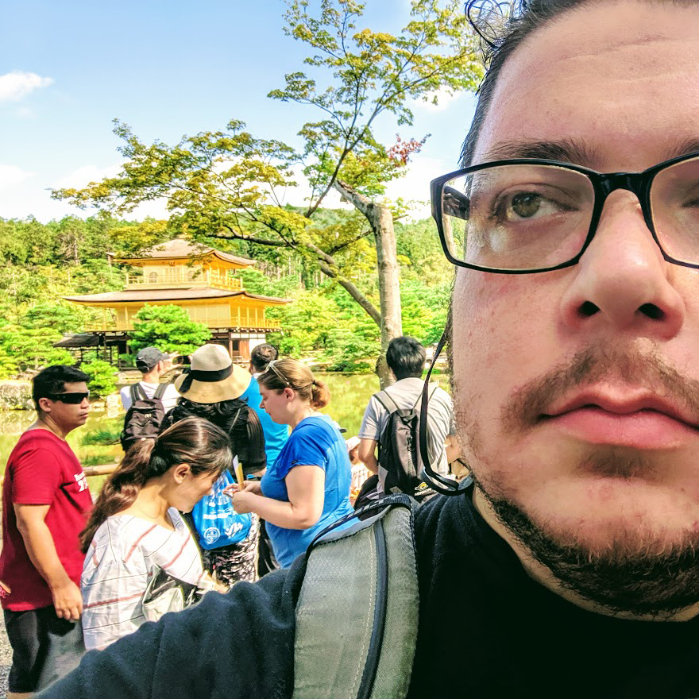

Assistant Professor | Data (Social) Scientist
Between defending my dissertation and beginning work as an Assistant Professor at my alma mater, Southern Illinois University Edwardsville (SIUE), I was able to travel to Japan to present a portion of my dissertation work. Because I had to report to SIUE within days of the conference, I began my travels knowing it was going to be a short trip.
I started my Japan trip with a stop in San Francisco to celebrate my birthday. This gave me time to catch up with friends and meet industry contacts. This brief stay ultimately resulted in me forcing my friends to watch Stranger Things while we were not out for a drink or meal (see drinking.jpg).
“I wish I knew how to smile. Heat and humidity aside, I'm really enjoying Kyoto. #DiGRA2019”
APLeithTV on Instagram
After 13 hours of travel, I made it to Kyoto. Kyoto was as I expected. I would only be in Kyoto for a couple of days, so I endured the heat and humidity of a Japanese summer to do some tourist things, like visiting Kinkaku-ji, a Buddhist temple near the conference location, Kinugasa Campus of Ritsumeikan University (see temple.jpg). I otherwise made a point to spend my time as a local. I would grab food from the Family Mart or 7-Eleven between by Airbnb, which was about 2 kilometers up a mountain behind the campus, and the conference location. They had some of the best sushi and onigiri I have ever eaten. I also upheld my long running tradition of sampling some McDonald’s food every time I travel to a new country (see mcd.jpg). The only complaint about the Airbnb is that I was about a head taller than their intended occupants (see tall.jpg). Otherwise, you would find my listening to presentations (see tl.jpg). My time in Kyoto quickly came to an end.
During my last night in Kyoto, I was informed that my flights home had been cancelled due to Super Typhoon Lekima (see lekima.jpg). Though the typhoon would not hit Japan, I had a layover in Taiwan and Taiwan was directly in its path. I immediately began googling numbers for EVA Air and making phone calls to each of their offices. I quickly learned that EVA Air does not have a 24/7 line and that the Asian and American offices were closed. That left me in a foreign country with no flight home, a tiny Airbnb that I could not extend, and very little funds – still a student, not yet a professor. In the midst of my panic, a friend offered to call the EVA offices as they opened so that I could sleep. Though minimal, her offer was enough for me to take a breath, relax, and get three hours of sleep. Once I woke up, I was able to get EVA Air to put me on a direct flight from Kansai to San Francisco. I was squished against a wall that cut into my legroom and got zero sleep, but at least I knew I was going home.
"Lekima is like a horse with an extremely fierce temper."
Luo Yuezhen
a top meteorologist with the Zhejiang weather service center